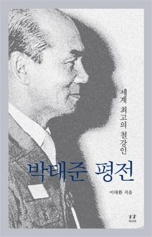

등록일 2016-12-09
‘철강왕’ 故박태준 평전 완결판 출간
5주기 맞아 12년 만의 개정판
생애 마지막 7년간 기록 더해
성장 열정·사회 공헌 의지 보여
고 박태준(1927~2011년) 포스코 명예회장의 5주기를 맞이해 ‘박태준 평전-세계 최고의 철강인’ 완결판이 8일 출간됐다. 박 명예회장이 희수를 맞이했던 2004년 12월에 처음 나왔던 ‘박태준 평전’에는 일제강점기 유년시절부터 포항제철 성공신화, 정치입문과 은퇴 과정 등이 생생하게 담겼다. 12년이 지나 발간된 개정증보판에는 평전 출간 이후 2011년 박 명예회장이 타계하기까지 7년 동안의 어록과 활동 내용이 더해졌다.
이번에 더해진 생애 마지막 7년의 기록에서도 박 명예회장의 한국의 성장을 향한 열정과 사회공헌 의지가 곳곳에서 엿보였다. 저자 이대환 작가는 2005년 한·일 국교정상화 40주년 기념 국제학술대회에서 박 명예회장이 제시한 동북아시아 비전 관련 발언을 백미로 꼽았다. 당시 박 명예회장은 일본을 향해 “때늦은 용기로 주변국 신뢰를 얻으라”고 주문했고, 한국에는 “때맞은 용기를 내 시대를 재조명하고 미래를 구상하라”고 조언했다.
과학인재 육성·지원 중요성을 오랫동안 역설해온 박 명예회장은 2008년 포스코청암재단 이사장을 맡은 이듬해 자신의 구상을 ‘청암사이언스펠로십’으로 구체화 시켰다. 이 펠로십은 해외가 아닌 국내 대학·연구소에서 기초과학을 연구하는 젊은 과학자를 선발해 국내에서 연구에 전념할 수 있도록 지원하는 취지의 프로그램이다.
‘박태준의 마지막 계절’이란 소제목이 붙은 박 명예회장의 타계 직전 모습은 생사고락을 함께 했던 옛 직원들과의 만남 장면으로 묘사됐다. 건강이 악화됐던 2011년 9월 포항 행사장에 들어선 박 명예회장은 참석자 전원의 우레 같은 박수를 받았고, 19년 만에 만난 직원들과 “정말 보고 싶었다”고 손을 맞잡았고 결국 울었다.
타계 1년 전이던 2010년 베트남 국립하노이대 강연에서 박 명예회장이 남긴 강연의 울림은 여전히 크다. 호찌민의 청렴함, 베트남의 자신감을 일류국가 완성을 위한 좌표로 제시하던 그는 한국 청년들에게 “평화통일과 일류국가 완성이란 운명이 주어졌다”는 당부를 남겼다.
홍희경 기자
saloo@seoul.co.kr
[출처]
http://www.seoul.co.kr/news/newsView.php?id=20161209027024&wlog_tag3=naver


이 글은 구 홈페이지에서 옮겨온 것입니다. 원문 보기